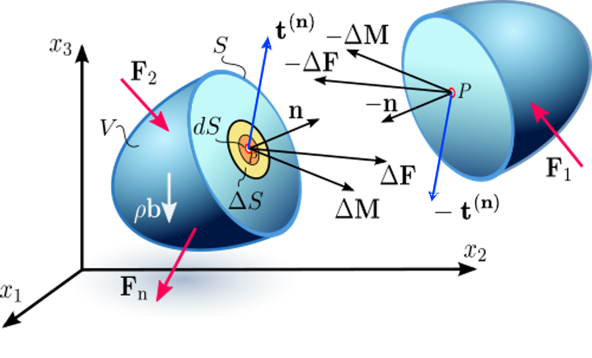
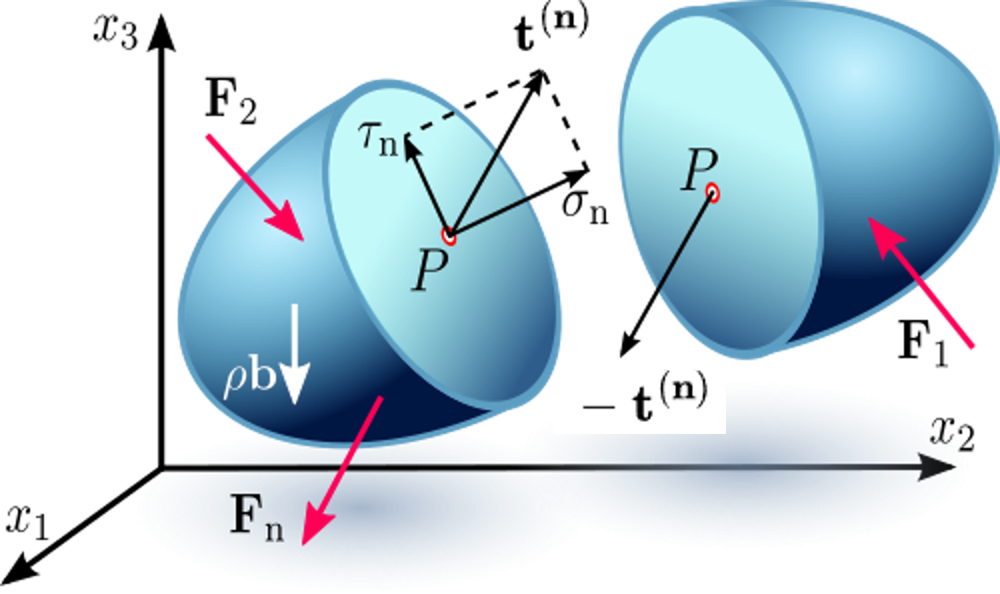
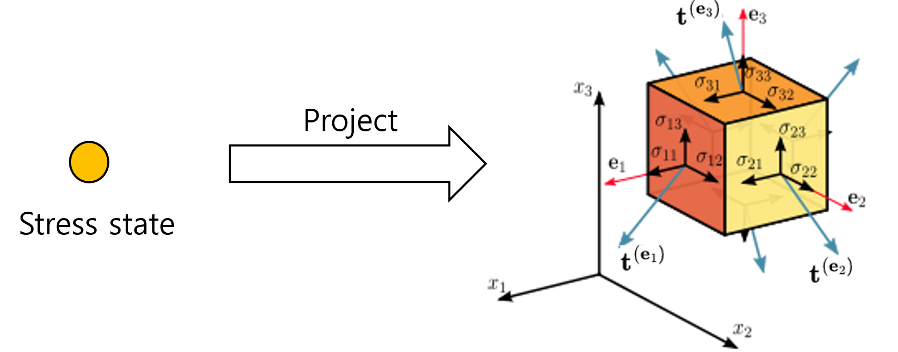
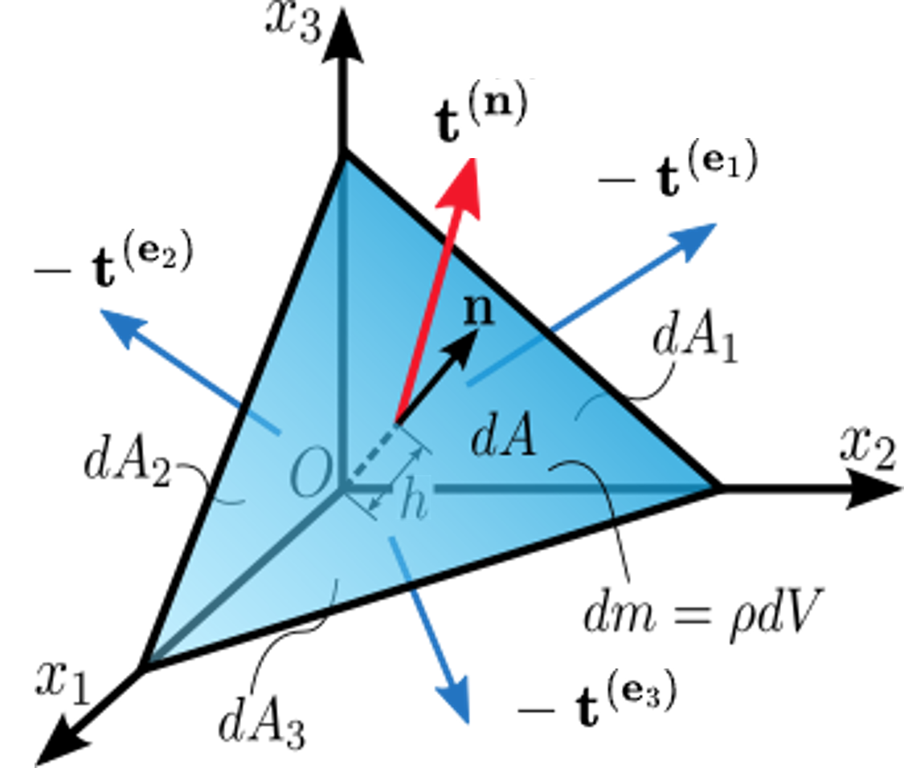

응력 텐서는 도대체 무엇인가?
내부 절단면에서 코시 응력 공식까지
응력 텐서, 응력텐서, 코시 응력 텐서, 코시 응력, 트랙션 벡터, 면에 작용하는 응력, 코시 응력 공식, 코시 사면체, 임의 면의 응력, 수직응력 전단응력, 연속체역학, 재료역학, 텐서 축약
English | 한글
응력은 단순히 힘을 면적으로 나눈 값이 아니다
재료역학에서 가장 먼저 배우는 식 가운데 하나가
\[ \sigma = \frac{F}{A} \]
이다.
물론 유용한 식이다. 하지만 이 식만으로 응력을 이해하면 3차원 연속체에서 응력이 실제로 무엇을 나타내는지 놓치기 쉽다.
물체 내부의 한 점을 생각해 보자. 그 점을 지나는 면은 무수히 많다. 면의 방향이 달라지면 그 면을 통해 전달되는 힘도 달라진다. 따라서 한 점에서 하나의 응력값만 가지고 모든 내부면의 힘을 설명할 수는 없다.
응력 텐서를 처음부터 행렬로 소개하기보다, 더 물리적인 질문에서 시작하는 편이 낫다.
물체를 한번 잘라 보자.
내부를 잘라 보면 무엇이 나타나는가?
물체 내부의 한 점 \(P\)를 생각하자.
\(P\)를 지나는 아주 작은 내부면을 가상으로 만든다. 그 면적을 \(\Delta S\), 면의 방향을 나타내는 단위 법선벡터를 \(\mathbf n\)이라 하자.
절단면 한쪽의 재료는 반대쪽 재료에 힘 \(\Delta\mathbf F\)를 가한다. 면적을 무한히 작게 줄이면 트랙션 벡터(traction vector)를
\[ \mathbf t^{(\mathbf n)}(P) = \lim_{\Delta S\rightarrow 0} \frac{\Delta \mathbf F}{\Delta S} \]
로 정의할 수 있다.

트랙션은 결국 방향을 가진 내부면을 통해 전달되는 단위면적당 힘이다.
여기서 중요한 것은 ’방향을 가진 면’이라는 점이다.
같은 내부면을 반대쪽에서 보면 바깥쪽 법선은 \(\mathbf n\)에서 \(-\mathbf n\)으로 바뀐다. 국부 평형에 의해
\[ \mathbf t^{(-\mathbf n)} = -\mathbf t^{(\mathbf n)} \]
이어야 한다.
작용과 반작용을 한 점의 내부면에서 표현한 것이다.
같은 점이라도 절단면을 돌리면 트랙션이 달라진다
이제 점 \(P\)는 그대로 두고 가상의 절단면만 돌려 보자.
트랙션 벡터가 달라진다.

이 관찰이 응력 텐서를 이해하는 출발점이다.
\[ \mathbf t^{(\mathbf n)} \]
은 점 \(P\)만의 함수가 아니다. 정확히는
\[ (P,\mathbf n) \]
에 대응한다.
같은 재료점에서도 면의 방향이 달라지면 서로 다른 트랙션이 생긴다.
그러면 여기서 자연스럽게 질문이 하나 생긴다.
점 \(P\)에서 가능한 모든 면의 방향에 대해 트랙션 벡터를 만들어 내는 하나의 물리량이 있을까?
즉,
\[ \mathbf n \longmapsto \mathbf t^{(\mathbf n)} \]
이라는 국부적인 관계를 하나의 객체로 표현할 수 있을까?
그 객체가 바로 코시 응력 텐서(Cauchy stress tensor)다.
우선 세 개의 좌표면에서 시작하자
모든 방향을 한꺼번에 생각하기 전에, 점 \(P\)를 지나는 세 개의 특별한 면부터 보자.
바깥쪽 법선이 직교기저
\[ \mathbf e_1,\qquad \mathbf e_2,\qquad \mathbf e_3 \]
인 세 면이다.
각 면의 트랙션을
\[ \mathbf t^{(\mathbf e_1)},\qquad \mathbf t^{(\mathbf e_2)},\qquad \mathbf t^{(\mathbf e_3)} \]
라 하자.

각 트랙션 벡터는 세 개의 직교성분을 갖는다.
다음 표기법을 사용하면
\[ \mathbf t^{(\mathbf e_j)} = \sigma_{1j}\mathbf e_1 + \sigma_{2j}\mathbf e_2 + \sigma_{3j}\mathbf e_3, \]
세 트랙션 벡터를 행렬의 열로 모을 수 있다.
\[ \boldsymbol{\sigma} = \begin{bmatrix} | & | & |\\ \mathbf t^{(\mathbf e_1)} & \mathbf t^{(\mathbf e_2)} & \mathbf t^{(\mathbf e_3)} \\ | & | & | \end{bmatrix}. \]
따라서
\[ \boldsymbol{\sigma} = \begin{bmatrix} \sigma_{11} & \sigma_{12} & \sigma_{13}\\ \sigma_{21} & \sigma_{22} & \sigma_{23}\\ \sigma_{31} & \sigma_{32} & \sigma_{33} \end{bmatrix}. \]
여기서
\[ \sigma_{ij} \]
는 법선이 \(\mathbf e_j\)인 면에 작용하는 트랙션의 \(\mathbf e_i\) 방향 성분이다.
따라서 \(i=j\)이면 수직응력 성분이고, \(i\ne j\)이면 전단응력 성분이다.
아홉 개의 성분은 결국 세 좌표면에 작용하는 세 트랙션 벡터를 성분으로 적어 놓은 것이다.
문제는 그 다음이다.
세 좌표면의 트랙션을 안다고 해서, 기울어진 임의의 면에 작용하는 트랙션을 어떻게 알 수 있을까?
그 답은 평형에서 나온다.
코시 사면체
재료점 주위에 무한히 작은 사면체를 생각하자.
기울어진 면의 면적을 \(dA\), 그 면의 바깥쪽 단위 법선벡터를
\[ \mathbf n = n_1\mathbf e_1 + n_2\mathbf e_2 + n_3\mathbf e_3 \]
라 하자.
나머지 세 면은 좌표면과 나란하고 바깥쪽 법선은
\[ -\mathbf e_1,\qquad -\mathbf e_2,\qquad -\mathbf e_3 \]
이다.

사면체의 기하학으로부터 세 좌표면의 면적은
\[ dA_1=n_1dA,\qquad dA_2=n_2dA,\qquad dA_3=n_3dA \]
이다.
이제 평형을 적용한다.
사면체의 대표 길이를 \(h\)라 하면 표면력은
\[ O(h^2) \]
의 크기를 갖지만, 체적력과 관성력은
\[ O(h^3) \]
이다.
평형식을 \(dA\)로 나누고 \(h\rightarrow0\)의 극한을 취하면 체적에 비례하는 항은 표면력에 비해 사라지고
\[ \mathbf t^{(\mathbf n)}dA + \mathbf t^{(-\mathbf e_1)}dA_1 + \mathbf t^{(-\mathbf e_2)}dA_2 + \mathbf t^{(-\mathbf e_3)}dA_3 = 0 \]
이 남는다.
작용-반작용 관계
\[ \mathbf t^{(-\mathbf m)} = -\mathbf t^{(\mathbf m)} \]
와
\[ dA_i=n_i dA \]
를 사용하면
\[ \mathbf t^{(\mathbf n)} = \mathbf t^{(\mathbf e_1)}n_1 + \mathbf t^{(\mathbf e_2)}n_2 + \mathbf t^{(\mathbf e_3)}n_3 \]
을 얻는다.
이 식이 핵심이다.
코시 응력 공식
앞에서
\[ \mathbf t^{(\mathbf e_1)},\qquad \mathbf t^{(\mathbf e_2)},\qquad \mathbf t^{(\mathbf e_3)} \]
를 응력 텐서의 세 열로 정의했다.
따라서
\[ \boxed{ \mathbf t^{(\mathbf n)} = \boldsymbol{\sigma}\cdot\mathbf n } \]
이고, 성분으로 쓰면
\[ t_i^{(\mathbf n)} = \sigma_{ij}n_j, \qquad i,j=1,2,3 \]
이다.
이것이 코시 응력 공식(Cauchy’s stress formula)이다.
여기서 \(\boldsymbol{\sigma}\cdot\mathbf n\)의 점 $\cdot$은 이 글에서 한 번의 축약(single contraction)을 명시한다.
\[ t_i^{(\mathbf n)}=\sigma_{ij}n_j. \]
반복지수 \(j\)에 대해 합을 취하고 자유지수 \(i\) 하나가 남기 때문에 결과는 벡터다.
Zi-SEM에서는 텐서 연산의 구조가 학습에 도움이 될 때 $\cdot$을 명시적으로 사용한다. 다만 이것을 모든 텐서 교재가 따르는 보편적 기호 규칙으로 이해하면 안 된다. 문헌에 따라 곱 기호를 생략하기도 한다. 헷갈릴 때 가장 확실한 방법은 반복지수가 몇 쌍이고 자유지수가 몇 개 남는지 확인하는 것이다.
이제 앞에서 던진 질문에 답할 수 있다.
한 재료점에서 코시 응력 텐서는 그 점을 지나는 어떤 방향의 면에 대해서도 트랙션 벡터를 결정하는 연산자다.
즉,
\[ \boxed{ \text{면의 방향} \quad\longrightarrow\quad \text{트랙션 벡터} } \]
가 응력 텐서의 본질적인 의미다.
조금 더 직접적으로 쓰면
\[ \boxed{ \mathbf n \quad\xrightarrow{\;\boldsymbol{\sigma}\;} \quad \mathbf t^{(\mathbf n)} } \]
이다.
따라서 응력 텐서는 단순히 \(3\times3\)개의 응력성분을 모아 놓은 표가 아니다.
내부면의 방향을 그 면에 작용하는 트랙션으로 보내는 선형 사상(linear mapping)이다.
임의 면의 수직응력과 전단응력
\(\boldsymbol{\sigma}\)를 알고 있으면 법선이 \(\mathbf n\)인 면의 트랙션은 바로
\[ \mathbf t^{(\mathbf n)} = \boldsymbol{\sigma}\cdot\mathbf n \]
으로 구한다.
이 트랙션을 면에 수직인 성분과 접선 성분으로 나눌 수 있다.
수직응력은
\[ \sigma_n = \mathbf t^{(\mathbf n)}\cdot\mathbf n \]
이고, 코시 응력 공식을 대입하면
\[ \boxed{ \sigma_n = \mathbf n\cdot\boldsymbol{\sigma}\cdot\mathbf n } \]
이다.
이 식도 축약의 관점에서 보면 명확하다. 먼저 \(\boldsymbol{\sigma}\cdot\mathbf n\)이 벡터를 만들고, 다시 \(\mathbf n\)과 축약하면 스칼라인 \(\sigma_n\)이 남는다.
접선방향의 전단 트랙션은
\[ \boldsymbol{\tau} = \mathbf t^{(\mathbf n)} - \sigma_n\mathbf n \]
이므로
\[ \boxed{ \boldsymbol{\tau} = \boldsymbol{\sigma}\cdot \mathbf n - (\mathbf n\cdot\boldsymbol{\sigma}\cdot \mathbf n)\mathbf n } \]
이다.
공학적으로 보면 수직응력과 전단응력은 서로 독립적으로 따로 주어야 하는 새로운 응력량이 아니다.
특정 방향의 면을 정했을 때 응력 텐서가 만들어 내는 하나의 트랙션 벡터를 수직성분과 접선성분으로 분해한 것이다.
그렇다면 응력 텐서는 실제로 무엇을 나타내는가?
응력 텐서를 보면
\[ \sigma_{11},\sigma_{12},\ldots,\sigma_{33} \]
이라는 아홉 개의 숫자부터 떠올리기 쉽다.
하지만 이 숫자들은 선택한 좌표계에서 본 텐서의 성분이다.
물리적으로 더 중요한 것은 임의 방향의 내부면을 통해 내부력이 어떻게 전달되는지를 결정하는 규칙이다.
한 재료점에서
\[ \boxed{ \text{응력 텐서} = \text{국부적인 규칙: 면의 방향} \rightarrow \text{트랙션 벡터} } \]
라고 생각하면 2차 텐서의 의미가 훨씬 덜 추상적이다.
3차원 문제이기 때문에 숫자 아홉 개가 필요해서 응력 텐서를 도입한 것이 아니다.
내부면을 돌리면 그 면을 통해 전달되는 힘이 달라지기 때문에, 그 방향 의존성을 하나의 수학적 객체로 표현할 필요가 있는 것이다.
Z Diagram과의 연결
이 해석은 Z Diagram의 기본 연결 가운데 하나인
\[ F \longleftrightarrow \sigma \]
의 의미도 분명하게 해준다.
구조물 규모에서는 하중과 평형을 주로 힘으로 설명한다.
재료점 규모에서는 내부력의 전달을 트랙션과 응력 텐서로 설명한다.
두 표현을 연결하는 것이 평형이다.
코시 사면체는 이 연결을 아주 국부적으로 보여준다. 무한소 물체의 힘 평형에서 시작하면
\[ \mathbf t^{(\mathbf n)} = \boldsymbol{\sigma}\cdot\mathbf n \]
에 도달한다.
따라서 응력 텐서는 연속체 내부에서 전달되는 힘을 한 점에서 표현한 국부적인 물리량으로 이해할 수 있다.
강의 영상
이 내용은 재료역학 강의에서도 설명한다.
기억할 것
기억해야 할 것은 단순히
\[ \mathbf t^{(\mathbf n)} = \boldsymbol{\sigma}\cdot\mathbf n \]
이라는 공식 하나가 아니다.
내부를 자른다.
그러면 절단면에 트랙션 벡터가 나타난다.
절단면의 방향을 바꾸면 트랙션도 바뀐다.
세 좌표면의 트랙션을 모으면 응력 텐서의 성분이 된다.
그리고 코시 사면체의 평형을 적용하면 그 하나의 텐서가 모든 방향의 내부면에 작용하는 트랙션을 만들어 낸다는 것을 알 수 있다.
\[ \boxed{ \mathbf t^{(\mathbf n)} = \boldsymbol{\sigma}\cdot\mathbf n } \]
결국 핵심은 이것이다.
응력 텐서는 숫자 아홉 개의 표가 아니라, 내부면의 방향이 주어졌을 때 그 면을 통해 전달되는 힘을 결정하는 국부적인 규칙이다.